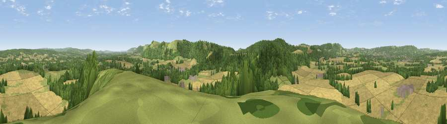

Torberry Hill
#18069 in England · top 24% of its area beats it · near South HartingThe view, rendered

A 360° render of this exact spot computed from the terrain model, tree cover and land cover — summer colours, afternoon light, calibrated against photographs of famous viewpoints. Real trees, hedges and buildings will differ in detail.
The panorama
Grey silhouette: terrain skyline in each direction (720 bearings, Earth curvature and refraction included). Dashed green: skyline with trees (+15 m) and buildings (+8 m) as obstacles. Blue strip: how far the ground is visible on each bearing.
Where the view opens
Wedge length = distance to the farthest visible ground on that bearing (vegetation-aware). Rings at 10, 25 and 50 km.
What fills the view
59% cropland · 23% woodland · 17% grassland · 1% built-up
Angular shares of the visible panorama (visual magnitude), not map area. Landscape diversity 0.44 (0–1 Shannon).
Key numbers
More beautiful places nearby
The staircase of upgrades: each row has a higher view potential than everything closer. Driving times are estimates from straight-line distance, calibrated against real road routing — check an actual route before setting out.
| Place | Direction | Drive | Score |
|---|---|---|---|
| Tower Hill | SSE · 2 km | ~6 min | 68.2 |
| Harting Down | SE · 3 km | ~6 min | 76.5 |
| Beacon Hill | SE · 3 km | ~8 min | 85.8 |
| Chanctonbury Ring | ESE · 37 km | ~56 min | 87.0 |
| Viewpoint near St. Lawrence | SSW · 49 km | ~70 min | 88.2 |
| Viewpoint near Niton | SSW · 53 km | ~74 min | 89.2 |
| Viewpoint near West Bexington | WSW · 127 km | ~151 min | 89.5 |
| The Knoll | WSW · 128 km | ~152 min | 91.0 |
50.97708, -0.89213 · source: osm peak · position refined by local search. Computed location — check access rights before visiting.